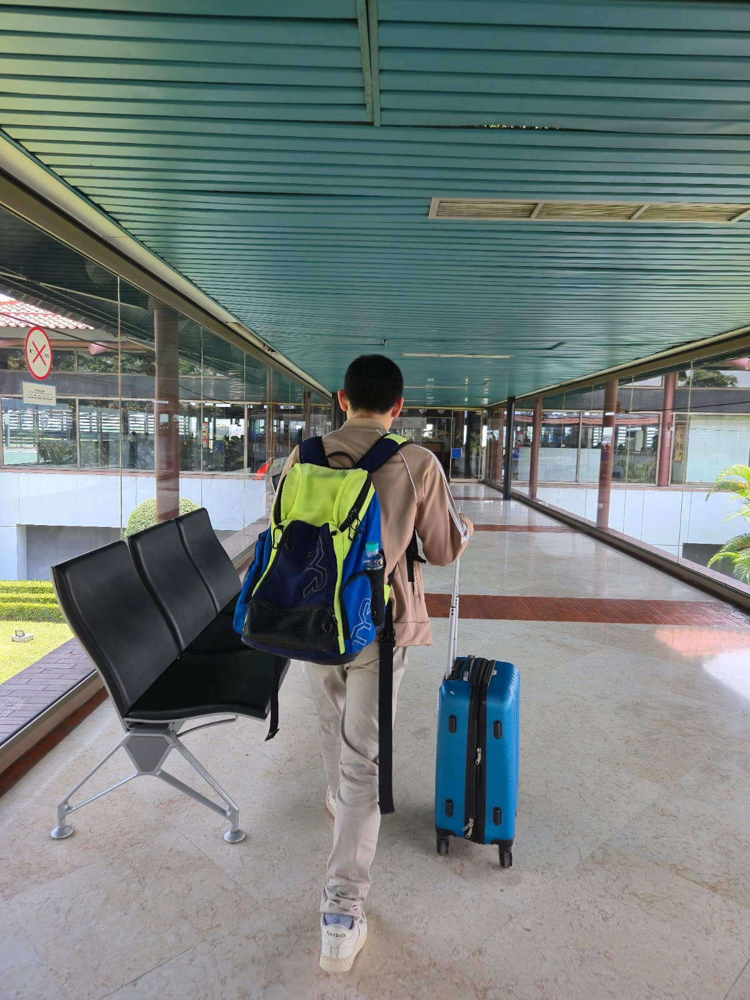
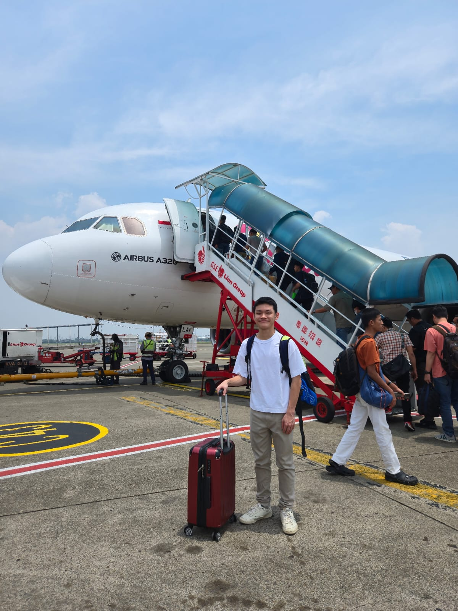
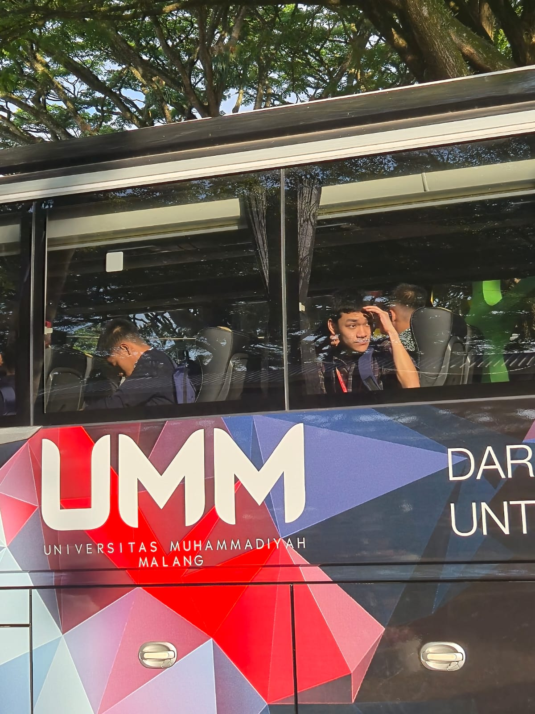
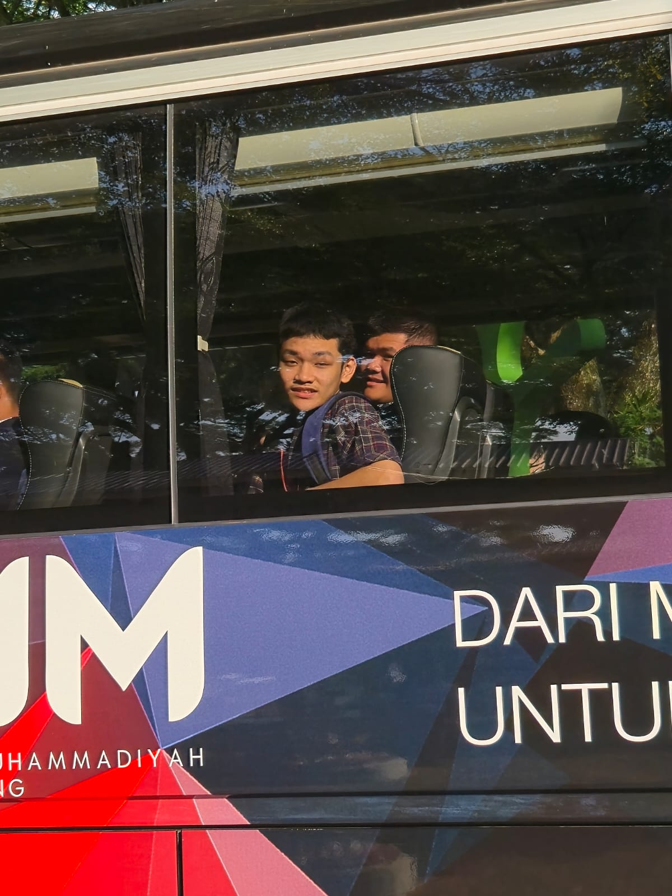
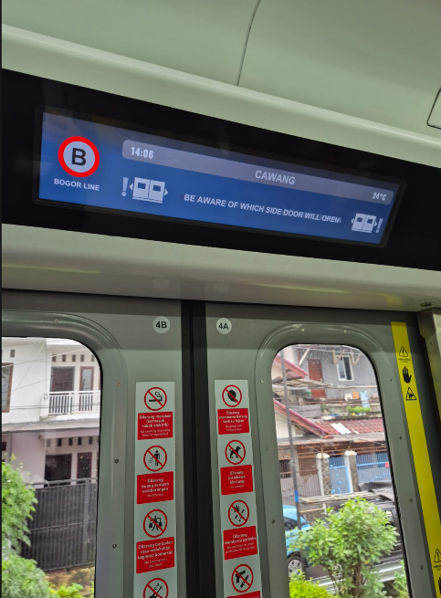
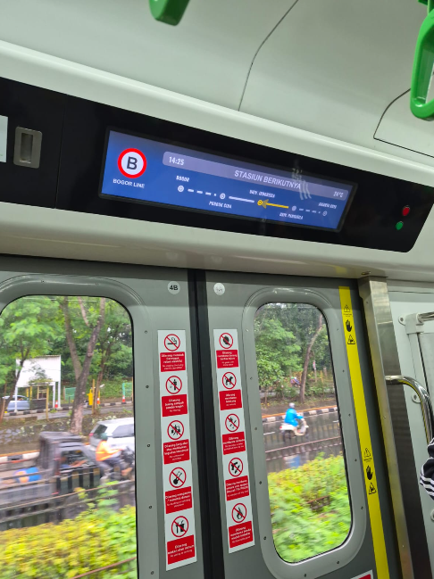

Transportasi: bandara, pesawat, bus, dan MRT
Bagian transportasi sering terlihat sepele, padahal justru di sinilah ritme perjalanan terasa. Dari bandara, pesawat, bus, sampai MRT, semuanya ikut membentuk suasana sebelum dan sesudah kegiatan utama.
Bandara dan perjalanan udara
Foto ini diletakkan dekat dengan cerita perpindahan kota karena bandara dan pesawat adalah awal dari ritme perjalanan.



Mendokumentasikan perpindahan dari satu kota ke kota lain sebagai bagian dari keseluruhan cerita. Menggunakan transportasi bukan hanya untuk berpindah tempat, tetapi juga sebagai momen istirahat, antisipasi, atau refleksi. Menunjukkan bahwa perjalanan edukasi selalu punya lapisan logistik yang juga menarik diceritakan.
Bus dan MRT
Bagian ini menunjukkan transportasi harian yang mungkin terlihat biasa, tetapi sebenarnya menghubungkan semua kegiatan.



Saya belajar bahwa cerita perjalanan terasa lebih lengkap kalau bukan cuma hasil akhirnya yang ditunjukkan, tetapi juga proses perpindahannya.